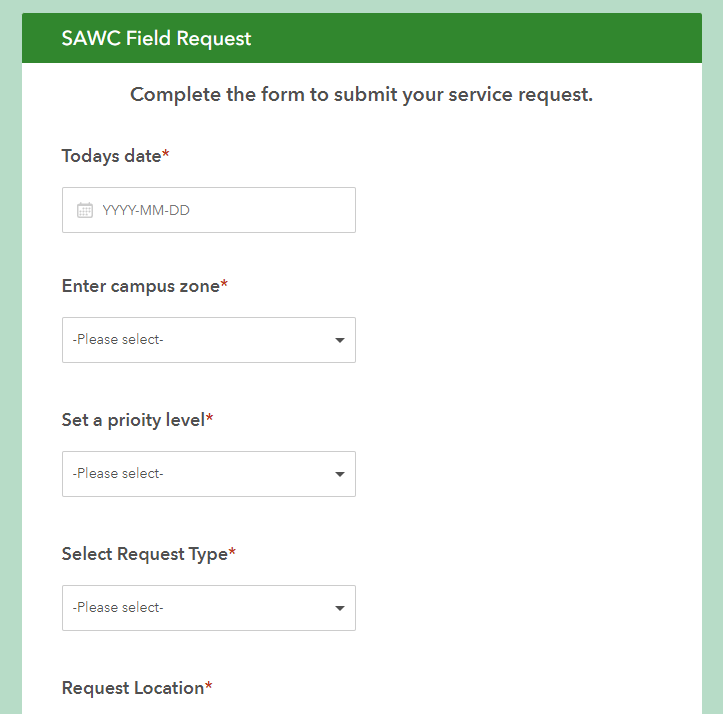
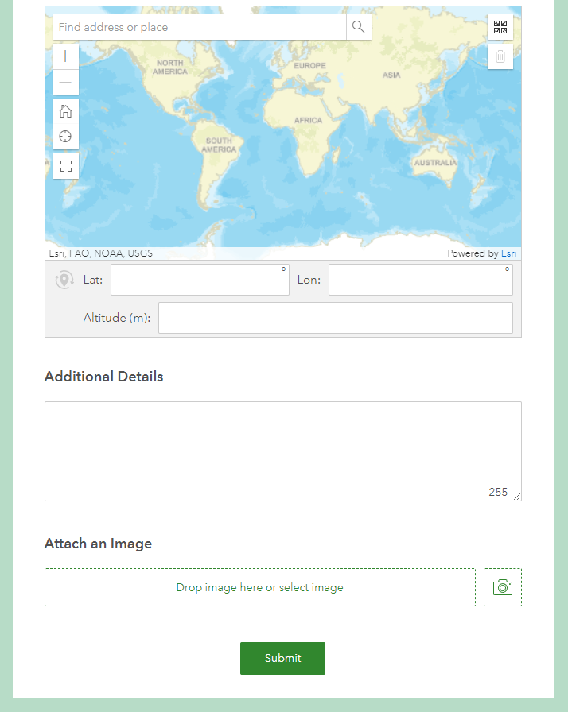
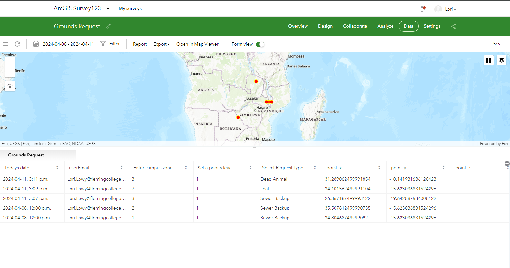
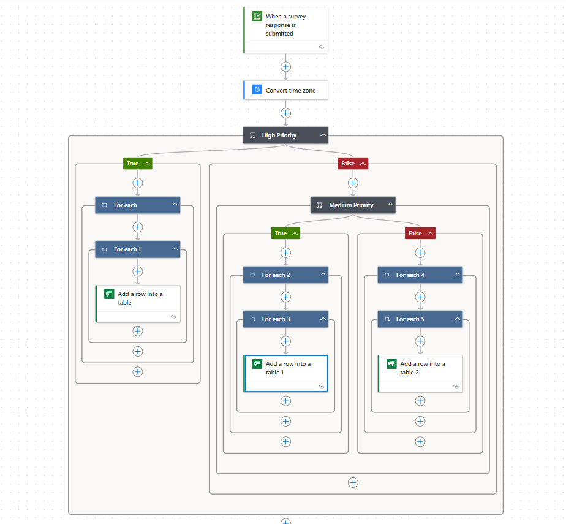
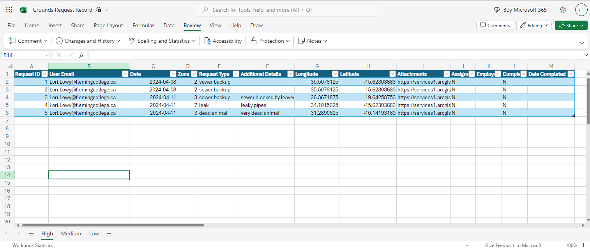
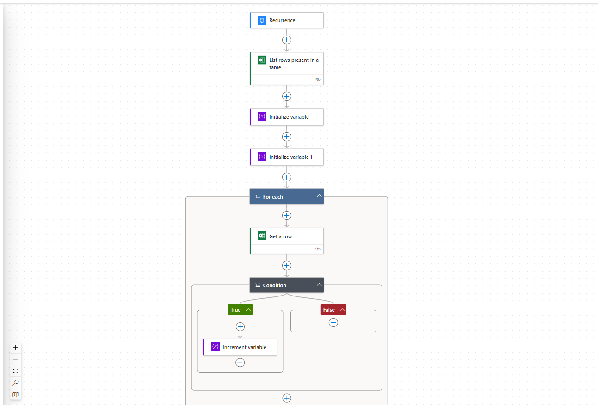
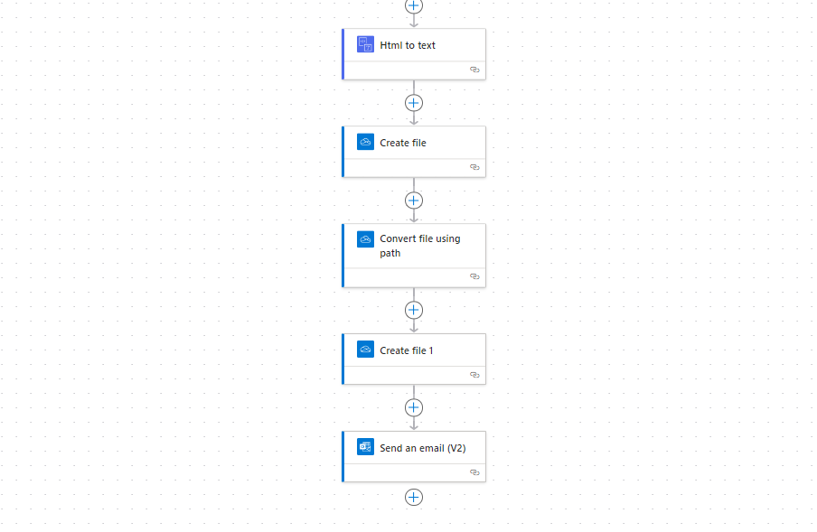

For this solution, we integrated Survey123, Power Automate and Excel Onedrive to create a dynamic solution that enables us to accomplish a similar solution to AGOL that adapts to the existing technological knowledge of the client. Once a survey is submitted, the Excel Workflow is initiated, populating the excel document with the survey request. From there, a manager can make modifications to the document, when they assign the task to a staff member. Excel sheets can be printed and distributed to staff members as necessary. The manager can update tasks when they are completed and set the completion date. Next, the excel spreadsheet connects to our scheduled report generating workflow, which uses the tasks and their status to generate reports which are emailed and can be adapted to send out daily, weekly or monthly.
The request form created in Survey123 was specially adapted to be used with the automated workflow. A copy of the public survey can be found here
 After surveys are submitted, they can be managed in the Survey123 Manager in AGOL
We used Power Automate to automate the process of taking a survey request and placing it into the Excel Onedrive workbook. As mentioned in the methodology, the workbook had to be already set up in order to use this flow. See an image of the flow below.
The final excel sheet with survey responded populated looks like this:
The integrated reporting system uses Microsoft Power Automate to create a system of tools that would create an HTML document of the report, upload this to OneDrive, create a PDF out of that report, upload the PDF to OneDrive, and finally email a link with the PDF to anyone on the email list. This would run on a timed basis, depending on when SAWC wants the reports created and sent out. In practice, there would be three flows, one for each of the levels of priority, all that go out at different times. Below is a screenshot of the overall flow.
 Microsoft Power Automate is useful for integrating different software into one solution. Team Purple Penguins wanted to come up with a solution that used more well known software like Excel so that potentially more people could understand the workflow. The dynamic text is useful for Flows that will occur on a timed basis, and Flow also had a lot of online help. However, there were some flaws to this software. An issue that was common is that certain functions that would be easy to do in a programming language such as Python were slightly more complicated in Power Automate. Adding conditionals and iterations took time to fully comprehend. There was also a licensing issue with Power Automate. The ideal way to create a report would be to populate a Word document. However, this was only available to premium Microsoft users. A solution was found with HTML, but HTML is not a commonly known progamming language for the average person. If the report were to be change, someone with knowledge of HTML would need to change it. Another issue that was found was the emailing of the actual report. Trying to attach a PDF to the email did not work. After some online research, it was discovered that this was a common bug with the version 2 of the Send An Email action. The old version was unavailable. Overall, Microsoft Power Automate had many advantages with its pleasing visual display and ability to integrate ESRI software with Microsoft software. There are many challenges to consider before implementing a FLow as a reporting system.